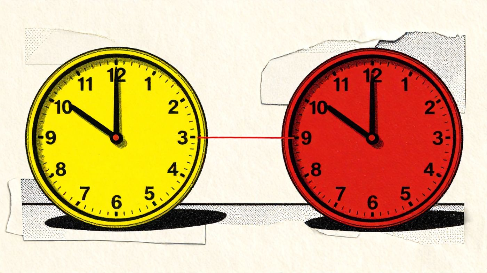
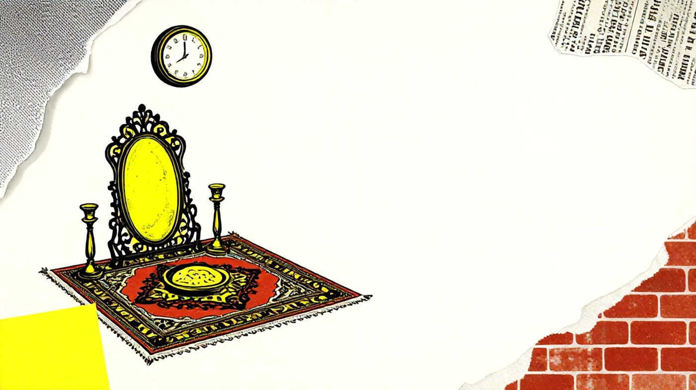

همهمان این صحنه را دیدهایم. مهمانی خانوادگی است، سفره پهن است، و عمهای یا خالهای، با همان مهربانی همیشگی، رو به جوان سیسالهی جمع میپرسد: «پس کی؟» جوان لبخند میزند و میگوید «حالا زود است.» مادربزرگ که در شانزدهسالگی عروس شده، سری تکان میدهد. سؤال به شوخی برگزار میشود و سفره ادامه پیدا میکند. اما زیر این شوخی، پرسشی جدی خوابیده است که هیچکس سر سفره نمیپرسد: ازدواج فقط عقب افتاده، یا معنایش عوض شده؟
این دو جواب، دو جهان متفاوتاند. اگر ازدواج فقط عقب افتاده باشد، با پول و خانه و کار برمیگردد. اگر معنایش عوض شده باشد، هیچ وامی آن را به شکل قدیمش برنمیگرداند.
عددهایی که سر سفره نمیآیند
جامعهشناسی آمریکایی به نام سی. رایت میلز میگفت ما گرفتاریهایمان را شخصی میبینیم، در حالی که بسیاری از آنها مسئلهی عمومیاند (Mills, 1959). سؤال عمه شخصی است. عددها نشان میدهند که نیست.
سالنامهی آماری کشور، به نقل از سازمان ثبت احوال، میگوید در سال ۱۳۹۰ حدود ۸۷۵ هزار ازدواج در ایران ثبت شد. در ۱۴۰۳ این عدد به ۴۷۰ هزار رسید۱. سیزده سال، و نزدیک به نصف. و از ۱۴۰۲ به ۱۴۰۳ هم، باز ۲٫۳ درصد کمتر.
اما عدد گویاتر را میلاد بگی، جمعیتشناس دانشگاه بوعلیسینای همدان، آورده است. در سال ۱۹۸۴، حدود ۹۰ درصد زنان ۲۵ تا ۲۹ سالهی ایران ازدواج کرده بودند. در ۲۰۲۲، این سهم به حدود ۶۰ درصد رسید. برای مردان همین سن، سقوط تندتر است: از حدود ۷۶ درصد به حدود ۳۰ درصد (Bagi, 2025). یعنی امروز از هر ده مرد ۲۵ تا ۲۹ ساله، هفت نفر متأهل نیستند.
در یک نگاه
سن نخستین ازدواج هم بالا رفته است. در سرشماری ۱۳۵۵، مردان بهطور میانگین در ۲۴ سالگی و زنان در کمتر از ۲۰ سالگی ازدواج میکردند. در سرشماری ۱۳۹۵، که تازهترین سرشماری گزارششده در سالنامه است، این دو عدد به ۲۷٫۴ و ۲۳ رسیده بود۱. ده سال از آن سرشماری گذشته، و عددهای دیگر همین یادداشت نشان میدهند که امروز بالاتر است.
دو توضیح، دو جهان
برای این عددها دو توضیح رایج هست، و هر دو قانعکننده به نظر میرسند.
توضیح اول اقتصادی است و همه آن را بلدیم: کار نیست، خانه گران است، عروسی خرج دارد، و فردا معلوم نیست. ازدواج، بیش از هر چیز، شرطبندی روی آینده است، و آینده این روزها اعتبار کمی دارد. خرداد امسال، رئیس سازمان امور اجتماعی کشور گفت حدود ۶۰ درصد مردم امیدی به بهتر شدن اوضاع ندارند۲. کسی که به فردا امید ندارد، روی فردا قول نمیدهد.
توضیح دوم فرهنگی است و از اروپا آمده. دو جمعیتشناس، رون لستاگ و دیرک فاندکا، از دههی ۱۹۸۰ میگفتند جهان صنعتی وارد «گذار جمعیتی دوم» شده است: ازدواج دیرتر و کمتر میشود، بچه کمتر، و شکلهای دیگری از زندگی مشترک جای ازدواج را میگیرند. علت را هم بیش از اقتصاد در تغییر ارزشها میدیدند: مهمتر شدن استقلال فرد، خودشکوفایی، و انتخاب آزاد (Lesthaeghe, 2014). در این نگاه، جوان امروز ازدواج را عقب نینداخته؛ دیگر آن را تنها راه زندگی بزرگسالانه نمیداند.
هر دو توضیح در ایران طرفدار دارند. اولی ما را به وام ازدواج و خانهی ارزان میرساند. دومی میگوید پول مشکل را حل نمیکند. پس باید دید شواهد به کدام نزدیکتر است.
دیرتر از آرزو
بگی سراغ همین پرسش هم رفته است. او دادههای پیمایش ملی ازدواج را بررسی کرده: ۸ هزار و ۳۴۹ نفر که برای نخستین ازدواج به آزمایشگاههای پیش از ازدواج آمده بودند. از آنها پرسیده شده سن ایدهآل ازدواج چند است، و کسانی که دیرتر از این سن ازدواج کرده بودند، گفتهاند چرا (Bagi, 2023).
نخستین یافته ساده است و مهم: تازهعروسها و تازهدامادها بهطور میانگین ۳ سال دیرتر از سنی که خودشان ایدهآل میدانستند ازدواج کرده بودند (Bagi, 2023). کسی که ازدواج را کنار گذاشته، سن ایدهآلی برای آن ندارد. اینها ازدواج را میخواستند، زودتر هم میخواستند، و نتوانستند.
یافتهی دوم دربارهی مردان است. از مردانی که دیر ازدواج کرده بودند، ۳۵٫۹ درصد «مشکلات مالی» را دلیل گفتهاند و ۱۲٫۶ درصد «نداشتن شغل»؛ یعنی تقریباً نیمی از آنها دلیلی اقتصادی آوردهاند (Bagi, 2023, p. 42). بگی توضیح میدهد که خانوادهی ایرانی هنوز بر الگوی «مرد نانآور» بنا شده، پس فشار اقتصادی بیش از همه بر دوش مرد میافتد. در کار دیگری هم نتیجه گرفته که تأخیر ازدواج در ایران بیشتر از شرایط اقتصادی میآید تا از هنجارهای فرهنگی (Bagi, 2025).
و یک عدد کوچک که شاید از همه گویاتر باشد: از کل این دیرازدواجکردهها، کمتر از نیم درصد گفتهاند برای «حفظ استقلال فردی» ازدواج نکردهاند (Bagi, 2023, p. 42). دلیلی که نظریهی گذار جمعیتی دوم در اروپا در مرکز میگذارد، در ایران تقریباً هیچکس به زبان نیاورده است.
برای بیشتر جوانها ازدواج هنوز آرزوست؛ آنچه عوض شده، فاصلهی آرزو تا امکان است.
گمان دارم همینجا معلوم میشود که گذار جمعیتی دوم، دستکم به شکل اروپاییاش، هنوز داستان ایران نیست. در اروپا، ازدواج دیرتر با پذیرفته شدن زندگی مشترک بیازدواج همراه بود. در ایران، دستکم در عددهایی که داریم، بیشتر صف انتظار است تا راه تازه.
دو ساعت که با هم کوک نیستند
اما ماجرا به اقتصاد ختم نمیشود. وقتی پای زنان به میان میآید، جدول دیگری پیدا میشود. مهمترین دلیل زنانِ دیرازدواجکرده، با ۳۱ درصد، «پیدا نکردن فرد مناسب» بوده است. همهی دلیلهای اقتصادی روی هم فقط ۷ درصد. و ۱۱٫۳ درصد هم ادامهی تحصیل را گفتهاند (Bagi, 2023, p. 42).
این یعنی برای مردان و زنان دو ساعت متفاوت کار میکند. ساعت مردان را اقتصاد عقب کشیده است: آنها ازدواج را میخواهند، ولی از نگاه خودشان و خانوادهی عروس هنوز «آماده» نیستند. ساعت زنان را چیز دیگری جلو برده است. بگی نشان میدهد حدود ۶۰ درصد زنانی که گفته بودند فرد مناسب پیدا نکردهاند، تحصیلات دانشگاهی داشتند و ۳۶ درصدشان شاغل بودند (Bagi, 2023, p. 44).
اقتصاددان آمریکایی، گری بکر، برای این وضع نامی داشت: بازار ازدواج. زن تحصیلکرده و شاغل دنبال همسری است که دستکم همسطح خودش باشد، در حالی که بسیاری از مردان هنوز همسری با تحصیلات کمتر را ترجیح میدهند. نتیجه، به تعبیر جمعیتشناسها، «تنگنای ازدواج» است (Bagi, 2023, p. 44).

گمان دارم سازوکار اصلی همین دو ساعت است. هر کدام از این دو تغییر بهتنهایی ازدواج را کند میکرد؛ با هم، جفتیابی را سخت میکنند. مرد دیرتر آماده میشود، زن سختگیرتر انتخاب میکند، و سالها در این میان میگذرد. پس جواب پرسش اول «یا این، یا آن» نیست: برای بخشی از جوانها ازدواج عقب افتاده، و برای بخشی دیگر معنایش عوض شده، و گره درست جایی است که این دو به هم میرسند.
سیاست رسمی بیشتر به ساعت اول پرداخته است. بگی شمرده که فقط در سالهای ۱۳۸۳ تا ۱۳۹۵، پنج قانون، یک لایحه و سه مورد سیاستگذاری برای تشویق و آسان کردن ازدواج تصویب یا طراحی شده، و در همین سالها سن ازدواج همچنان بالا رفته و شمار ازدواجها پایین آمده است (Bagi, 2023, p. 46). بعدها، به گزارشها، برای ۲۰۵ سایت همسریابی هم مجوز صادر شد۳. اگر این تحلیل درست باشد، پول میتواند ساعت مردان را کمی جلو بکشد، اما ساعت دوم با وام کوک نمیشود.
آنچه هنوز نمیدانیم
باید صادق بود. گمان ندارم این عددها بتوانند حکم قطعی بدهند. دلیلها را خود آدمها گفتهاند، و آدمها گاهی دلیلی را میگویند که گفتنش آسانتر است؛ «پول نداشتم» راحتتر از «دلم نخواست» گفته میشود. پیمایشی که بگی بررسی کرده فقط سراغ کسانی رفته که ازدواج کردهاند، نه کسانی که اصلاً ازدواج نمیکنند؛ و استان تهران هم در آن نبوده. دربارهی زندگی مشترک بیازدواج، که در ایران پنهان میماند، دادهی معتبری نداریم. و آمار سالهای جنگ و محاصره هنوز کامل نیست. شاید ساعت دوم از آنچه این عددها نشان میدهند تندتر کار کند.
آنچه با اطمینان بیشتری میشود گفت این است: نرخ باروری ایران به زیر ۱٫۵ فرزند برای هر زن رسیده است۴، و این عدد بدون ازدواجِ دیرتر قابل فهم نیست. پرسش ازدواج، پرسش جمعیت فردای ایران هم هست.
باز، همان سفره

برگردیم به همان مهمانی. عمه میپرسد «پس کی؟» و جوان میگوید «حالا زود است.» حالا میدانیم که این جواب، بیشتر وقتها راست نیست. زود نیست؛ دیر است، پنج سال دیرتر از آنچه خودش میخواست. جوان سر سفره نمیگوید خانه گران است، نمیگوید کار ندارد، نمیگوید کسی را پیدا نکرده که با زندگیاش جور باشد. میگوید «زود است»، چون این تنها جوابی است که سفره را به هم نمیریزد.
سؤال عمه شخصی است. جوابش، چنانکه دیدیم، نه.
این قافلهی عمر عجب میگذرددریاب دمی که با طرب میگذردساقی غم فردای حریفان چه خوریپیش آر پیاله را که شب میگذردخیام